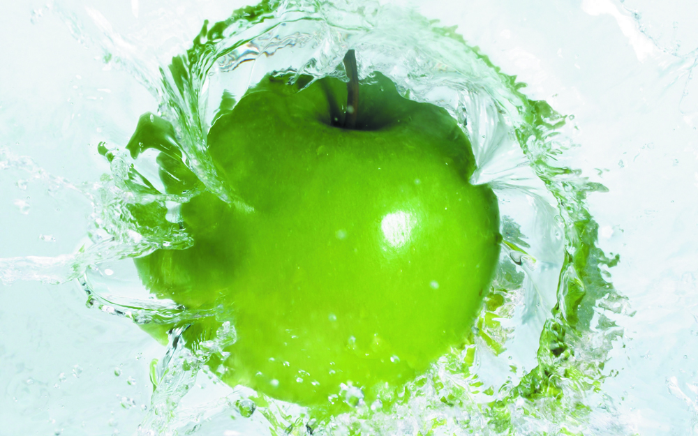
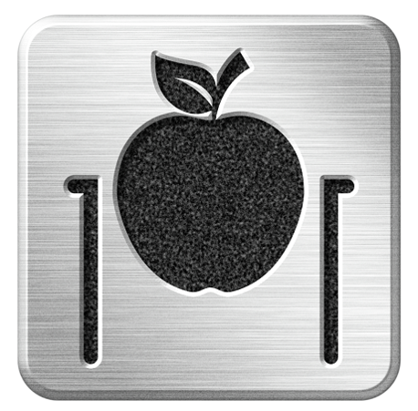
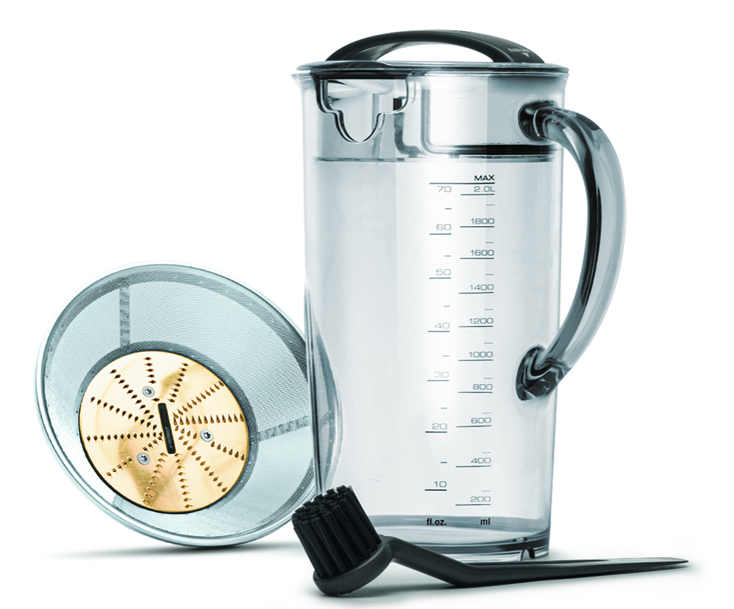
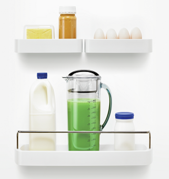
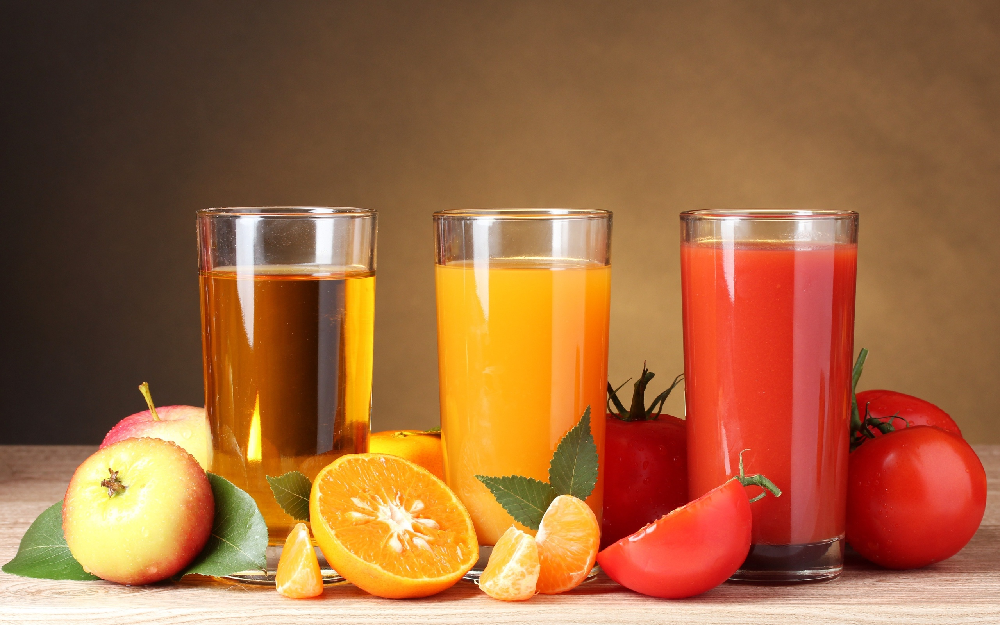
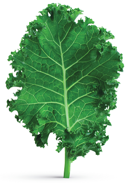
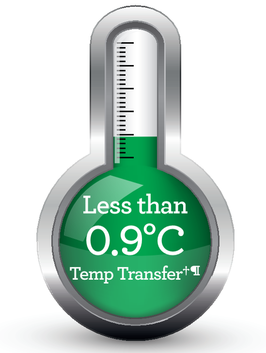

Соковыжиматель S701
Фонтан холодного сока
Особенности
Непревзойдённая скорость отжима
Диаметр загрузочного желоба равен 84 мм, что позволяет загружать многие продукты целиком, не разрезая их на части. Это способствует получению большего количества сока за меньшее время.
Кувшин для сока объёмом 2 литра
Кувшин для сока увеличенного объема с сепаратором пены. Объем кувшина равный 2 литрам позволит Вам дольше работать с соковыжималкой, не выливая выжатый сок. Мелкоячеистый фильтр обладает непревзойденным уровнем фильтрации. Нитрид-титановое покрытие повышает устойчивость ножей к износу, окислению и коррозии. Благодаря этому они служат дольше, всегда гарантируя отличный результат.
Кувшин для сока с герметичным уплотнителем
Крышка стакана, конструктивно отличается, от предыдущих моделей наличием герметичного уплотнителя. Что позволяет храниться свежевыжатому соку в холодильнике до 3-х суток, прямо в стакане! Для этого потребуется всего лишь повернуть верхнюю крышку на 180°.
Высота носика для подачи сока 21 см
Вы можете использовать вместо кувшина для сока любую удобную Вам посуду. Насадка для отжима в стакан не допустит разбрызгивания сока при отжиме. Также эта насадка выполняет функцию «Капля-Стоп», для этого нужно повернуть насадку носиком вверх.
Носик для подачи сока расположен на уровне 21 см от плоскости стола, что позволяет наливать сок в высокий бокал.
Фонтан холодного сока
При отжиме продуктов в соковыжимателях BORK, не происходит перегрева сока.
Используемые технологии в соковыжимателях BORK позволяют сохранить все витамины и питательные вещества. А так же передать всю гамму вкусов и свежести отжимаемых продуктов.
Как это достигается:
- Диск выполнен с нитрид-титановым покрытием, обладающим низким коэффициентом трения.
- Зубцы располагающиеся на диске имеют минимальный размер, что позволяет уменьшить силу трения и не перегревать продукт.
- Сетка с лазерной микроперфорацией имеет минимальное сечение перегородок между отверстиями. Что соответственно минимизирует возможный нагрев сока.
- За счёт высоких оборотов фильтра обеспечивается максимальное затягивание воздуха через загрузочный желоб, способствующий охлаждению продуктов и механизмов.
- При длительном отжиме, не происходит перегрева корпуса, благодаря технологи принудительного охлаждения двигателя. Что так же в конечном итоге сказывается на температуре свежевыжатого сока.
Безопасность и надёжность
Плавный запуск двигателя, защита от перегрева, и электронный ограничитель скорости вращения обеспечивают соковыжимателю высокую надежность и безопасность в использовании.
Overload Protection – система защиты от тепловой перегрузки. В случае срабатывания защиты, загорается индикатор. В этом случае соковыжиматель включится спустя 30 мин.
Аргументы для продажи
- Непревзойдённая скорость отжима
- Кувшин для сока увеличенного объёма с сепаратором пены и герметичным уплотнителем на крышке
- Возможность наливать сок в высокий бокал
- Визуальный контроль процесса отжима
- Фонтан холодного сока
- Надёжность и безопасность
Технические характеристики
Мощность: 1250 Вт
Размер загрузочного желоба:84 мм
Объём стакана для сока: 2 л
Капля стоп: Да
Щетка для очистки фильтра: Да
Вес: 4,8 кг
Габариты (В×Ш×Г), см: 40×45×21